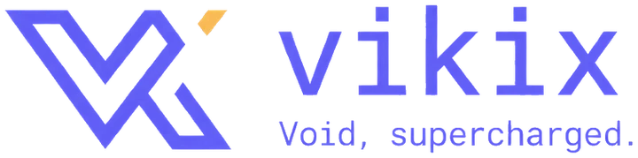
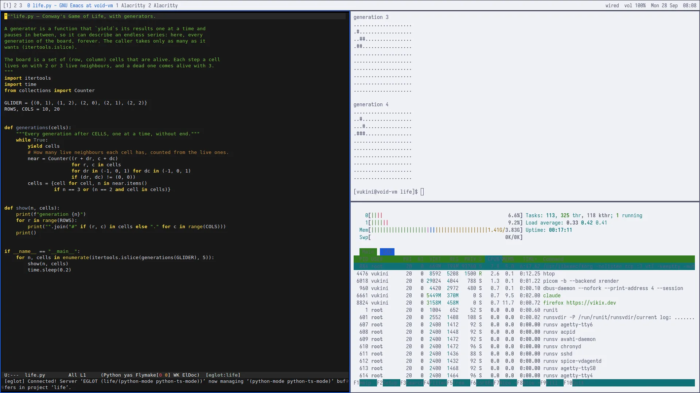
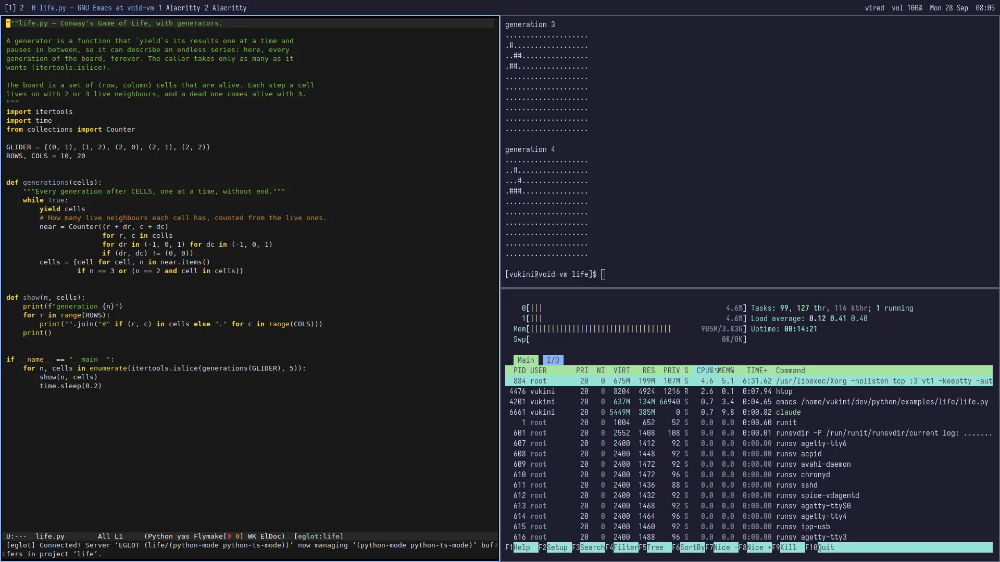

Void Linux, supercharged · version 0.25.2
Vikix.
The agentic desktop.
A fast, keyboard-first Linux desktop with an AI agent built in. Ask it to change a key, a colour or a setting: it tries the change on the running desktop, and one command takes it back.
Free and open source. It installs on top of Void Linux, and you can try it in a virtual machine first, without touching Windows or macOS.


The agentic desktop
Ask it, and watch it happen.
Most AI lives in a chat window and tells you what to click. On Vikix the agent does it for you: it knows how this desktop is put together, it can change the running desktop and see the result, and it saves a copy of your settings before it starts.
:: snapshot 99e03a6: before an agent session :: to see what the agent changed: vikix changes :: to take it back: vikix undo you › Switch the desktop to the void theme, and make Super+t open a second terminal. Try the key live first, then keep it in my user.lisp. ● Skill(vikix) loaded: how this desktop is put together ● Super+t is live now. I'll save it to user.lisp so it survives a reload. ● Both changes are in place. - Theme: the desktop is on void now. vikix theme saved the choice, so it will still be void after you log in again. - Super+t: I bound it live first (vikix-bind "s-t" "vikix-terminal"), then added it to ~/.stumpwm.d/user.lisp and reloaded. It also shows up in the Super+F1 key help. vikix changes shows the new lines. If you want either change back, vikix undo will reverse it.
$ git show HEAD | llm "write the commit message" Here is the commit message: "Added new section to site/index.html explaining the Super+F10/F11 key combinations for talking to the AI and accessing the guides" :: llama3.2:3b, offline: nothing left the laptop. :: the diff was this page's own change; llm logs keeps it.
You decide how far it goes.
By default the agent shows each command and each edit, and waits for your yes.
A snapshot before every session.
Your settings are saved first.
vikix changesshows what the agent did;vikix undotakes it back.It knows the desktop.
A guide installed with Vikix tells it where everything is, and which files are yours to change.
Or keep it all on your laptop.
vikix ai setupruns AI models on the machine itself, offline, with a picker that only offers what your laptop can run.AI on a key, anywhere.
Select text in any program and press Super+i: proofread it, rewrite it, translate it, explain it, or ask about it. A local model by default.
A safe remote control.
vikix mcp registergives your agent tools for the desktop: look at it, switch a theme, go to a window. Checked, logged, and the risky ones off.Speak, and it types.
Super+F9, say it, Super+F9: what you said is typed where you are. On your laptop, never sent anywhere.
Talk, and it answers aloud.
Super+F10, ask your question, Super+F10: the AI answers in a voice, and remembers the conversation. Super+F11 sends what you said to the agent instead, and it reads the reply to you.
"What's wrong?"
vikix diagnosegathers the logs, takes your keys out, and asks the agent how to fix it.Any agent you like.
Claude Code, or OpenCode, Codex, Gemini CLI or Aider:
vikix agent --use opencode. The same guide, the same snapshot first, and--localto keep it on your laptop.AI in your editor.
In Neovim and Emacs: a chat about your code on the same model as Super+i, and your agent beside it, started the same careful way, snapshot first.
And on the command line.
git diff | llm "write the commit message", with a local model or Claude, and every answer kept.Ask your notes.
note ask "what did I write about runit?"answers from your Obsidian vault, naming the notes, in any terminal. On your laptop, or Claude with--claude, sent only the passages it found.AI to learn from.
~/dev/ai: the Claude API and a local model from Python and the shell, embeddings in SQLite, and a program that answers from your own notes. Small, to read and change,make runin each.
Coming next, in this order
- A mouse, too. Click a workspace in the bar to go there; volume, Wi-Fi and Bluetooth open their settings.
- Your first hour. Installing Void for Vikix, then the first steps, with pictures.
New here? Start with this
Four words, explained.
You don't need to know any of this to read on. But if these words are new to you, here is what they mean, and why Vikix uses them.
An operating system, like Windows or macOS.
It's free, and it's yours to change. It runs most of the world's servers, and Android is built on it. On a laptop it's quick, private, and has no adverts or accounts to sign up for.
One version of Linux, small and fast.
Linux comes in many versions, called distributions. Void is a simple, independent one that starts in seconds and keeps itself up to date. You install Void first, then Vikix on top.
Windows that arrange themselves.
No overlapping windows to drag around: each new window takes its share of the screen, side by side, and you move between them with the keyboard. It feels strange for a day, and then everything else feels slow.
The part that arranges the windows.
It's the window manager Vikix uses, and you can change it while it runs. That's what lets the agent try a new key or colour at once, and lets you keep or drop it.
And the terminal? A window where you type commands instead of clicking. Vikix uses it a lot, and the agent works there, next to you.
Try it here
Tiling, in your browser.
A sketch of the desktop that answers the real keys. Click it, then press Return for a terminal, b or v to split the screen, and 1 to 3 to change workspace.
Honestly
Is Vikix for you?
Yes, if you…
- want an AI that does things on your computer, not only talks about them
- spend your day in a browser, an editor and a terminal
- want to learn how a computer works, or learn to program: twenty languages are a command away
- have a spare laptop, or are happy to try it in a virtual machine first
- like a fast machine that does only what you asked
Not yet, if you…
- never want to type a command: installing takes a few, and so do some settings
- need an installer you can click through: for now you install Void, then run two scripts
- play the latest games, or rely on Adobe or Office (a Windows window helps with some of that)
- want every program to match: Firefox, LibreOffice and Emacs keep their own look
See the whole gallery, in both themes, or watch the video.
What you get
A whole desktop, in one piece.
A window manager, a bar, a launcher, a terminal, editors, notifications, screenshots, themes, backups and updates, chosen to work together and set up for you. One command, vikix update, keeps all of it current.
StumpWM
A window manager you can reprogram while it runs.
StumpWM is written in Common Lisp. Vikix builds it with Swank inside, listening on 127.0.0.1:4004, so Emacs can connect with SLIME and redefine anything in the running window manager. Your own settings go in user.lisp, which loads last, so it always wins.
And apps made the same way: vikix add lisp-apps brings Nyxt (a browser), Lem (an editor) and McCLIM's Listener, each written in Common Lisp and changeable in it.
;; ~/.stumpwm.d/user.lisp (define-key *top-map* (kbd "s-t") "exec kitty") (setf *mouse-focus-policy* :click)
The AI agent
Claude Code, set up to work on the desktop with you.
Super+a starts Claude Code. A skill tells it how Vikix is put together and which files are yours to change. With vikix eval it can run Lisp in the live window manager and try a key or a theme before writing it down. Your files are snapshotted before every session. API keys have a place of their own, vikix ai key set anthropic: every shell gets them, and your dotfiles' history never does. And for offline work, vikix ai setup runs models on the laptop itself (Ollama), with a picker that's honest about what a CPU can do.
$ vikix eval '(vikix-apply-theme :paper)' $ vikix eval '(loadrc)' # reload after editing user.lisp
The bar
Each colour means one thing.
Themes
One theme for the whole desktop.
StumpWM, the bar, the terminal, rofi, notifications and the lock screen all follow one file of colours. This page uses the same two. And Omarchy's community themes come over in one line: vikix theme import bjarneo/omarchy-ash-theme.
Your files stay yours
Two kinds of file, never mixed.
VIKIX'S · linked
- init.lisp
- .xinitrc
- vikix.bash
- ~/.local/bin/vikix*
YOURS · copied once
- user.lisp
- alacritty, rofi…
- keyboard
- .Xresources
Updates refresh Vikix's links and never touch yours. Anything in the way is moved to .vikix-bak, never deleted.
Undo
A history of your config, with an undo.
Vikix keeps your files in a git repository outside your home folder. It takes a snapshot after every install and update, and before every agent session.
$ vikix snapshot "trying a new theme" $ vikix changes # what changed since then $ vikix undo # back one snapshot; run again to redo
One command
vikix update does the lot.
It pulls the new Vikix, updates Void, installs new packages, switches on new services, refreshes the config links and editor configs, runs any migrations, and reloads StumpWM so new keys work at once. The bar tells you when there's something to bring in. Just one part? vikix update core (Vikix alone, in seconds), system or tools.
$ vikix doctor # check everything is in place $ vikix theme paper # switch, everywhere, now $ vikix firmware # BIOS and device firmware, from LVFS
Made for playing with languages
Twenty languages, their docs offline, and a folder each in ~/dev.
Add the ones you want, vikix add rust, or all of them, vikix add developer; vikix remove drops one again. vikix docs downloads the documentation for each one, and Zeal searches it all with no network. Every one also comes with a guide to its tools and free books, and small examples to build and change, make run in each.
When work needs Windows
Windows 11 in a window, installed by itself.
Optional, for the programs that only run there. Point vikix windows create at the ISO from Microsoft and walk away: an answer file does the whole install, with drivers, a local account and no Microsoft account, in about 25 minutes. Its desktop tiles like any other window, the clipboard is shared, and ~/Windows is drive Z:. It runs as you, with no open port, on a network kept apart from this machine's own services.
$ vikix windows setup # once: the packages and drivers $ vikix windows create Win11_x64.iso # a notification when it's ready $ vikix windows # start it, and open its desktop
The keys
Everything is a key away.
Super is the Vikix key. On the desktop, Super+/ shows every key at a glance, Super+F1 searches them and runs the one you pick, and Super+m opens the menu for everything else.
Get it
From plain Void to Vikix.
Install glibc Void
A plain base install from the Void download page, with a normal user who can use sudo. The Void handbook walks you through it.
Run the install, and reboot
One line. It asks for your password once, then runs by itself, from the fastest mirror it finds.
Log in on tty1
The desktop starts. Open a terminal with Super+Return.
Add what you want
A welcome opens at your first login: pick languages, editors, LibreOffice, Windows or local AI from a list, set your keyboard and a theme. Or type it:
vikix featureslists them, andvikix addinstalls them. From then on,vikix updatekeeps everything current.
$ curl -fsSL https://vikix.dev/install | bash $ sudo reboot
It checks this is glibc Void, clones Vikix into ~/vikix and runs its install. Read it first: it's short. Or by hand: git clone https://github.com/vukini/vikix.git ~/vikix, then ~/vikix/install.sh --dry-run to see what it would do, and ~/vikix/install.sh.
$ vikix features # what there is $ vikix add essentials # Emacs, C, Python, Lisp
Trying it first? It runs well in a VM. The README has step-by-step notes for virt-manager and VirtualBox.
Under the hood
The base, then features.
Vikix is not a distribution. It is a set of bash scripts you run on an ordinary glibc Void install, plus the config they put in place. Every stage checks before it changes anything, so running it twice is safe, and --dry-run prints every change instead of making it.
The base: the desktop
./install.sh · then rebootEverything a working desktop needs. When it is done, you log in on tty1 and the desktop starts.
00-preflightchecks this is glibc Void, and that you are not root05-mirrortimes the mirrors and uses the fastest10-packagesthe base lists: desktop, apps, fonts, sound, laptop20-serviceslinks the runit services25-networkNetworkManager, then switches off dhcpcd30-lispQuicklisp, and builds StumpWM with Swank inside40-configlinks Vikix's files, copies yours50-audioPipeWire and WirePlumber55-hardwaretouchpad, microcode, the usual folders60-loginX starts after login on tty1
Features: what you add
vikix add NAME · any timeEach is a package list, and sometimes a setup step. Add them from the desktop, or in the same run with ./install.sh --with essentials. vikix remove takes one away again, with everything only it needed.
essentialsEmacs, C, Python, Lispdeveloperboth editors and every language, ~/deveverythingdeveloper, LibreOffice and printingcreativevideo, pictures and 3D: Shotcut, OBS, GIMP, Inkscape, Blenderrustor any other language, one by onewindowsWindows 11 in a windowlocal-aiAI models on the laptop (Ollama)
It asks for your password once, at the start, then runs by itself. Everything it prints is kept in ~/.local/state/vikix/logs/.
Not done yet
- No system tray: StumpWM has none.
nmtuiandblueman-managerare in the menu instead. - GTK and Qt programs (Firefox, LibreOffice) keep their own look.
- No installer ISO yet. For now it's a script on top of a plain Void install.
Questions
Before you try it.
Is it free?
Yes. Vikix is open source under the MIT licence, and Void Linux is free too. The one thing that can cost money is the AI: Claude Code needs a Claude subscription or an API key from Anthropic. The local models from vikix ai setup are free, and run on your own laptop, only more slowly.
Will it erase Windows?
Vikix itself never touches your disks. Installing Void does: Void's installer asks which disk to use, and it wipes that one. So try it in a virtual machine first (a computer inside a window, on your current system), or on a spare laptop.
Can I try it without installing anything?
Here on this page, a little: the sketch above answers the real keys. For the real thing, a virtual machine is best. The README has step-by-step notes for VirtualBox on Windows and virt-manager on Linux.
What does the AI see?
Nothing, until you start it. The agent runs in a terminal when you press Super+a, and it shows each command and edit and waits for your yes. What it reads goes to Anthropic, as with any Claude Code session. With a local model, nothing leaves your laptop. API keys have a place of their own, kept out of your settings' history.
What computer do I need?
A 64-bit PC or laptop (x86_64). We test in a virtual machine with 4 GB of memory, and the desktop itself is light. Local AI models want more: the picker checks your memory and only offers the ones that will run well.
Do I need to know Lisp, or Linux?
No. Keys and menus cover the everyday things: Super+/ shows every key, and Super+m opens a menu for the rest. When you want something changed, you can ask the agent in plain words. Lisp is there when you're curious. And the guides come with it: info vikix in a terminal or in Emacs, or Super+m → Vikix guide in the browser, with diagrams.
How is it different from Omarchy?
Omarchy, a desktop for Arch Linux, was the inspiration: a whole desktop, set up in one go, with opinions. Vikix goes its own way: Void instead of Arch, StumpWM instead of Hyprland, and an agent built in, with snapshots and an undo.
What if something breaks?
vikix doctor checks that everything is in place and says what to do. vikix undo takes back your last settings change. And you can ask in Discussions, or open an issue.
For Linux people · the system underneath
Why Void.
Void Linux has been going since 2008, when Juan Romero Pardines, a former NetBSD developer, started it as a test bed for a new package manager. It is not based on Debian, Arch or anyone else: it has its own package manager and its own build system, and it uses runit instead of systemd. What you get is a rolling release that is fast, small, and simple enough to understand all the way down.
Boots in seconds, and you can read all of it.
Void uses runit instead of systemd. Starting the system is three short shell stages; after that, runit keeps each service alive. There are no unit files, no journal format, no dependency graph to debug.
A package manager built for this system.
xbps was written from scratch for Void, and it is fast and plain. Every package records which shared libraries it needs, and xbps checks the whole update first: if it would leave a program without a library, xbps stops before changing anything.
sudo xbps-install -Su # update all xbps-query -Rs ripgrep # search
New versions, no release upgrades.
Void is a rolling release, so there is never a big-bang upgrade to a new version of the distribution. But it aims for stability, not the bleeding edge: packages follow upstream's real releases, never betas or development snapshots. Kernels come as series packages, such as linux6.12, so you choose when to move.
One repo, built in the open.
Every package is a short template in void-packages on GitHub, built by xbps-src in a clean container, without root. You can build any package yourself the same way, and cross-compile it for ARM from your laptop.
Two C libraries, both official.
Void is one of the few distributions with official binary repositories for both glibc and musl: glibc on x86_64, i686, aarch64 and 32-bit ARM, and musl on all of those except i686. Vikix uses glibc, for the widest range of software.
You start with very little.
A fresh Void install is a shell, a network and a package manager. Nothing runs that you didn't ask for. That makes it a good floor to build a desktop on, which is exactly what Vikix does.
How a service works on Void
A service is a folder with a script in it.
Each service in /etc/sv/ has a run script that starts the program in the foreground. To switch a service on, link its folder into /var/service/. runit notices within seconds and starts it. To switch it off, remove the link.
That is the whole model. You can learn it in a coffee break, and when something goes wrong, the thing to read is a five-line shell script.
# the sshd service, complete $ cat /etc/sv/sshd/run #!/bin/sh exec 2>&1 ssh-keygen -A >/dev/null 2>&1 [ -r conf ] && . ./conf exec /usr/bin/sshd -D $OPTS # switch it on, check it, switch it off $ sudo ln -s /etc/sv/sshd /var/service/ $ sudo sv status sshd run: sshd: (pid 842) 12s $ sudo rm /var/service/sshd
For Linux people · the neighbours
Void and the other rolling releases.
Arch, openSUSE Tumbleweed and Gentoo are all good systems. Void makes different choices: fewer moving parts, one official repository, and a package manager that checks libraries before it changes anything.
| Void | Arch | openSUSE Tumbleweed | Gentoo | |
|---|---|---|---|---|
| INIT | runit: a few shell scripts, and a folder per service | systemd | systemd | OpenRC, or systemd |
| PACKAGES | xbps, written for Void | pacman | zypper and RPM | Portage, built on your machine; an optional binary host |
| EXTRA SOFTWARE | All in one official repo, reviewed as pull requests. Software that may not be redistributed is built locally with xbps-src. |
The AUR: build scripts anyone can upload. You read each one, or trust a helper to. | Community projects on the Open Build Service | Overlays |
| UPDATE SAFETY | xbps tracks the shared libraries each package needs, and stops an update that would break one | Partial upgrades are unsupported: update everything at once, and read the news first | Snapshots tested by openQA; roll back with Btrfs and Snapper | Portage resolves and rebuilds what depends on a changed library |
| C LIBRARY | glibc or musl, both with official binary repos (musl on all but i686) | glibc | glibc | glibc, or musl profiles |
| ARCHITECTURES | x86_64, i686, aarch64, armv6, armv7 | x86_64 (others are separate ports) | x86_64, plus ports | Many |
| FEEL | Small, quick, and quiet. It stays out of your way. | Huge community, and the best wiki in Linux | Polished and tested, with company backing | Total control, if you have the time |
Where Arch is ahead
More software, through the AUR, and many more users writing guides. The Arch Wiki is excellent, and most of it applies on Void too. If a package you need exists only in the AUR, that matters.
Where Void is ahead
No init system to learn, no third-party build scripts to trust, no AUR helper. Updates are one xbps transaction that checks libraries first. And the whole system is small enough to hold in your head.
Why that suits a desktop layer
A layer like Vikix has to change the system in ways it can repeat and check. On Void that is plain: install from lists, link a service folder, drop a file in /etc/xbps.d/. Each Vikix stage does exactly that, and nothing clever.
Made by
Hi, I am The Vikid Truth.
I build Vikix for my own laptop, and share it so you can have it too. I also write on Substack. If you like Vikix, follow me there.
Questions or ideas? Ask in Discussions. Something broken? Open an issue. Or just say hi on X, @vukini. For anything else, and security problems you'd rather not post in public, write to vikid@vikix.dev.